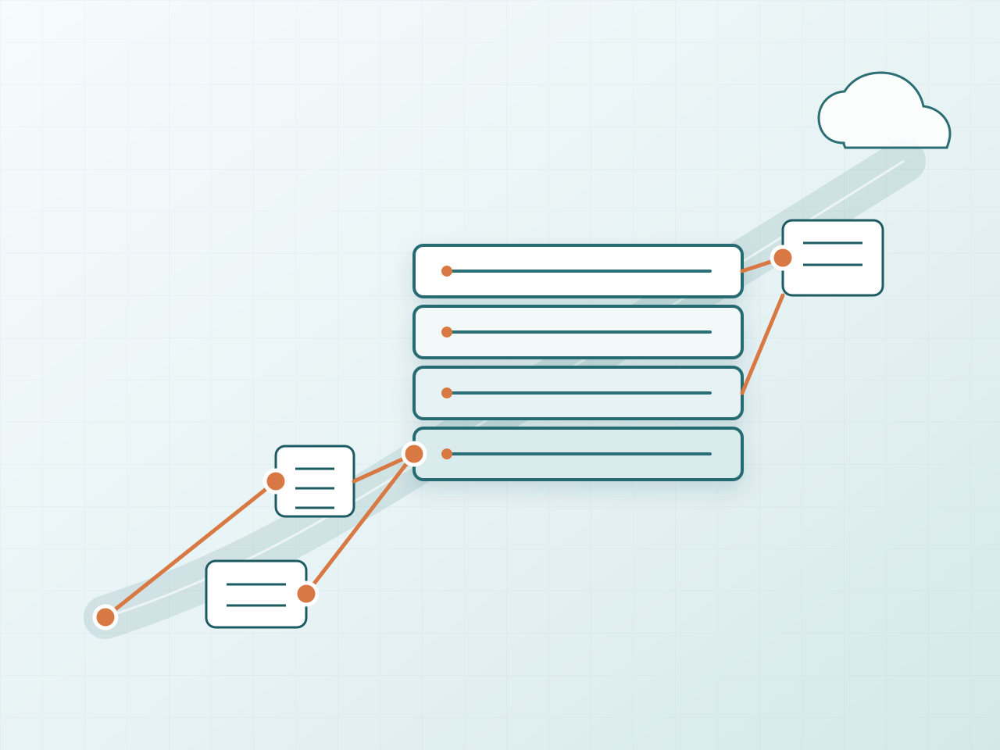
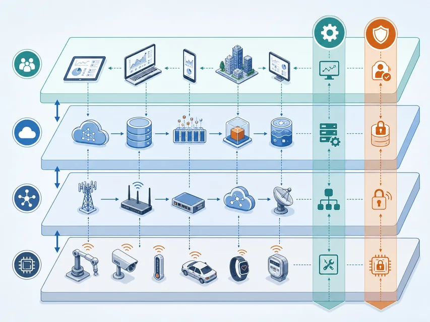
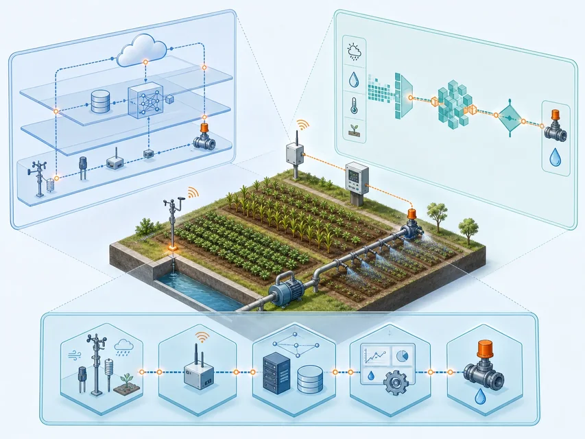

边缘设备
传感器、执行器、标签和控制器

用模型追查灌溉系统的问题
 VER. 2608
Built with impress.js
VER. 2608
Built with impress.js
系统没有按预期灌溉时，说明要查哪个环节、哪条记录，以及由谁处理
按信息怎样采集、传送、处理和返回现场来分工；实际设备可以兼任多个角色
进入：实体物 → 边缘设备 → 网络／网关 → 平台 → 应用
反馈：应用决策 → 执行设备 → 实体物
传感器、执行器、标签和控制器
连接设备、传输数据并适配协议
提供计算、存储、数据管理和共享
围绕行业目标分析、决策和服务用户
信息系统借助虚拟物表示实体物状态，并把控制决策传给现场设备
01
02
03
04
05
06
07实体物状态
→ 传感、标识或定位
→ 虚拟物与数据
→ 分析和决策
→ 控制命令
→ 执行器动作
→ 实体物变化实体物、虚拟物和反馈关系比一张设备列表更能说明系统如何工作
| 对象或动作 | 判断世界或方向 | 说明它记录什么或改变什么 |
|---|---|---|
| 田地中的阀门 | 判断所属世界 | 说明对象或动作 |
| 阀门的在线状态 | 判断所属世界 | 说明对象或动作 |
| 虚拟灌溉分区 | 判断所属世界 | 说明对象或动作 |
| 平台把命令送到控制器 | 判断传递方向 | 说明传递的内容 |
| 电机驱动阀门打开 | 判断发生的变化 | 说明改变的对象 |
画图时同时标出现场对象、系统记录，以及数据或命令从哪里传到哪里
设备在线后，还要核对读数的对象、时刻、字段与单位
| 角色 | 主要任务 | 需要关注 |
|---|---|---|
| 边缘设备 | 感知、标识、定位或执行现场动作 | 怎样测量或控制现场对象、耗电多少、接口和设备状态 |
| 网络 | 组网寻址与数据传输 | 覆盖、时延、带宽和可靠性 |
| 网关 | 连接设备、适配协议 | 转换、缓存、身份和安全 |
| 云与数据平台 | 计算存储与数据服务 | 设备身份、字段单位、访问权限和应用接口 |
直达、经网络和经网关表示不同连接条件，不分高低
两端有直接链路，数据格式兼容
可以直接通信
两端接口可互通，但没有直达链路
需要网络寻址和转发
接口或协议不兼容
适配接口或转换协议
先核对两端接口、协议和字段含义，再决定是否需要网络转发或网关转换
四层按职责分工；服务支持和应用支持层在本课简称“平台层”
四层：设备／网络／平台／应用
两面：管理／安全，跨层贯穿
一台网关可以同时连接设备、转换协议并执行安全检查；四层不要求每层各有一台机器

每层代表一组主要职责，不要求一一对应具体设备
边缘设备与通用设备，负责采集、执行、计算和连接
组网、寻址、路由和信息传输
简称“平台层”：管理数据，提供通用能力和专用应用支撑
行业业务、用户接口和智能服务
归类前先说明：是在列设备，还是在分析某项功能
| 视角 | 灌溉中的例子 | 归类办法 |
|---|---|---|
| 列出设备 | 连接土壤探头的网关 | 核对模型的设备定义 |
| 分析连通 | 将现场协议转换成平台协议 | 说明连通与适配职责 |
| 分析安全 | 检查命令的发送权限 | 归入跨层安全能力 |
教材在网络层介绍网关组网，又在 IWF 对照中把 ITU-T 网关列于设备层；答题要注明视角，不能仅凭“网关”二字归层
各层都要留下配置、故障和授权记录，供维护人员核查
资源发现、系统配置、故障处理、性能监测、计费和生命周期管理
维护人员据此检查系统能否继续运行，发现故障后怎样处理
身份、授权、机密性、完整性、隐私和审计
系统据此决定谁能做什么，并留下操作记录供事后核查
| 功能 | 请先判断层或面 | 请写判断依据 |
|---|---|---|
| 读取传感器状态 | 填写层或面 | 填写依据 |
| 将数据路由到平台 | 填写层或面 | 填写依据 |
| 保存历史数据 | 填写层或面 | 填写依据 |
| 认证设备身份 | 填写层或面 | 填写依据 |
先找功能，再判断它位于哪一层以及是否跨层
七层用来定位处理阶段；某项应用可以省略阶段，控制命令也不必逐层经过
与实体物交互，产生数据或执行控制
连通层连接设备；边缘层靠近现场过滤、压缩并快速决策
累积层把不断到达的数据存下来；抽象层整理不同来源的数据，统一结构和字段含义
应用层提供业务服务；协作层跨应用、组织和人员协调任务
沿用 plot-A 的教学数据；区分已有记录与尚未提供的处理证据
| IWF 阶段 | 本例对应的动作 | 可核对的记录 |
|---|---|---|
| 1 设备与控制器 | soil-01 报告地块湿度 | 含设备编号的观测 |
| 2 连通 | 湿度从设备送到平台 | 平台接收日志 |
| 3 边缘计算 | 如在现场过滤异常读数 | 本例未提供证据 |
| 4 数据累积 | 保存原始数值、单位和时刻 | observations.json |
本例使用合成文件和日志；分析记录不等于完成真实现场测量
先确认对象和时间可比，再统一单位；这种整理属于数据抽象
| 记录 | 处理动作 | 所在阶段 |
|---|---|---|
| soil-01：plot-A，0.28，ratio | 保留原始记录 | 数据累积 |
| soil-02：plot-A，28，% | 检查时间与对象，再统一成百分数 | 数据抽象 |
| 归一后都为28% | 按已定义规则判断是否需要灌溉 | 应用 |
归一化只解决表示方式不同，不证明两个传感器一样准确；原始值和单位要保留
同一湿度观测派生出 cmd-07；超时后是否有人处理，还要看工单记录
| IWF 阶段 | 本例对应的动作 | 已有或待补证据 |
|---|---|---|
| 5 数据抽象 | 将 0.28 ratio 换成 28% | 归一化程序输出 |
| 6 应用 | 按规则生成开阀请求 cmd-07 | command_created |
| 7 协作与流程 | 超时后安排维修人员检查 | 尚缺派单与处置记录 |
cmd-07 是应用生成的控制请求；不能因为它已发出，就认定阀门执行或人员协作已完成
请求成功不等于执行完成；设备接口须区分状态、动作与事件
| 交互 | 灌溉例子 | 你得到什么 |
|---|---|---|
| 属性 property | 读取 moisture=28% | 某时刻的状态 |
| 动作 action | 请求 open，携带命令编号 | 请求结果；不直接等于现场已开 |
| 事件 event | 接收 valve_fault 通知 | 发生了指定情况 |
先为当前故障选最相关的能力，不必每次把九项全部排查
| 要回答的问题 | 相关功能域 |
|---|---|
| 测什么、测谁、何时何地 | 感知；标识；定位与授时 |
| 信息如何传送和处理，设备如何执行 | 网络；计算；执行 |
| 如何判断与授权，如何维护 | 数据与智能；安全与隐私；管理 |
灌溉判断依赖可识别、可比较且成功传送的现场读数
| 相关功能域 | 任务中的问题 | 典型记录 |
|---|---|---|
| 感知／标识 | 测到什么，属于哪块田 | 读数及设备、地块编号 |
| 定位与授时 | 位置和先后是否可靠 | 坐标、时钟与事件顺序 |
| 网络／计算 | 信息怎样到达并被处理 | 链路、延迟与处理结果 |
平台收到读数后，灌溉判断、阀门动作、授权与维护仍须分别核对
| 相关功能域 | 任务中的问题 | 典型记录 |
|---|---|---|
| 数据与智能 | 根据什么决定灌溉 | 规则、模型与判断结果 |
| 执行 | 阀门是否按指令打开 | 执行状态与后续观测 |
| 安全与隐私 | 谁能查看数据和控制阀门 | 权限与访问日志 |
| 管理 | 如何发现和处理异常 | 配置、故障日志与告警 |
三个模型分析同一灌溉系统：职责、数据处理和所需功能
查设备、网络、平台、应用及管理、安全职责
查现场处理、保存、统一字段、应用与人员协作各完成了什么
查感知、标识、授时、执行等缺项
三个模型分析的是同一系统，只是各自关注的问题不同

下一步要选一条能区分可能原因的记录，避免从头重复检查
| 已知日志 | 这些记录能说明什么 |
|---|---|
| 10:00 soil-01 上报 plot-A=28% | 观测已到平台 |
| 10:00 生成 cmd-07：开 valve-01 | 平台已产生开阀请求 |
| 10:00 网关接受获准发送的 cmd-07 | 已获授权并到达网关 |
| 10:01 未收到 cmd-07 的设备确认 | 可能未收到命令、执行失败或确认丢失 |
先查 valve-01 是否收到 cmd-07；收到后，再查动作及确认回传
沿用上一节的数据格式，再找一条能帮助排除原因的记录
用同一套记录比较模型的问法，不重建三套系统